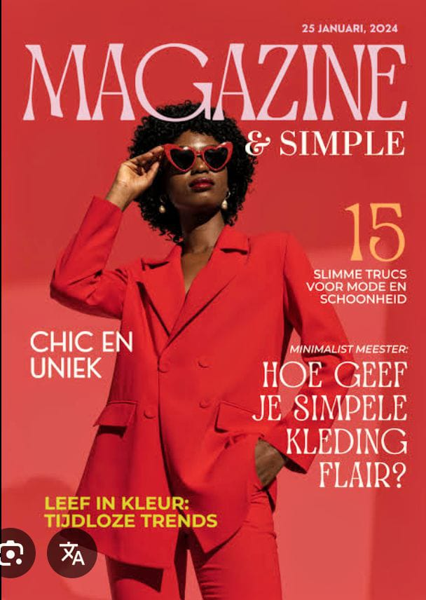
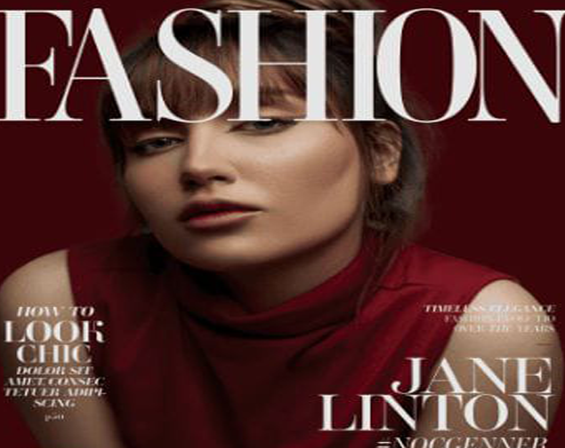

Multimedia Stories
Video interviews, audio clips, and photo essays that bring stories to life beyond the page.
Video interviews
Embedded videos from our YouTube channel. Replace the URLs with your own uploads.
Behind the mic: INTERVIEW WITH THE WOMAN THAT EXPERIENCED STRUGGLE IN BUSINESS.
Video review:Women in Power.
Photo gallery
The layout heavy images of magazines.


How to navigate our stories
Use the navigation bar at the top of the site to move between
Feature Stories,
Entertainment,
and this Multimedia hub. Each feature article includes links to any
related videos or photo essays.